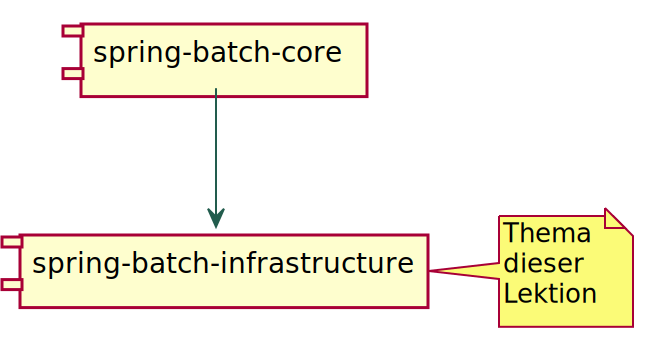
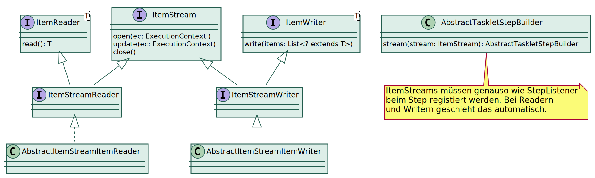
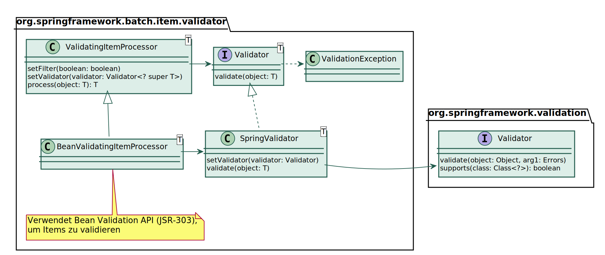

Lektion 5 - Die Spring-Batch Infrastruktur
Überblick zu dieser Lektion

Die org.springframework.batch.item… Packages
avro | Apache Avro Daten Serialisierung |
data | NoSQL-Datenbanken (GemFire, MongoDB, Neo4j, Spring-Data Repository) |
database | SQL-Datenbanken (Jdbc, Hibernate, JPA, Stored Procedures) |
ldif | LDAP Data Interchange Format: Reader für Zugriff auf LDAP-Quellen |
Messaging
amqp | Reader und Writer für Advanced Message Queuing Protocol
(Apache Qpid, Microsoft Windows Azure Service Bus, RabbitMQ) |
jms | JMS Reader und Writer |
kafka | Apache Kafka Reader und Writer |
mail | Writer zum versenden von Mails |
Einfache Dateien
file | Framework zum Arbeiten mit Dateien (CSV, feste Spaltenbreite) |
json | Lesen und Schreiben von JSON-Dateien |
xml | Lesen und Schreiben von XML-Dateien |
Support
adapter | Beliebige Methoden als Reader, Processor oder Writer verwenden |
function | Funktionen als ItemProcessor verwenden |
support | Komposition von Readern, Prozessoren und Writern |
validator | Validierung vor oder nach der Verarbeitung im Prozessor |
Datenbankzugriff mit Spring-Batch
| JDBC | JPA | Hibernate | Stored Procedure |
|---|
| JdbcCursor-ItemReader | JpaCursor-ItemReader | HibernateCursor-ItemReader | StoredProcedure-ItemReader |
|---|
| JdbcPaging-ItemReader | JpaPaging-ItemReader | HibernatePaging-ItemReader | |
|---|
| JdbcBatch-ItemWriter | JpaItemWriter | Hibernate-ItemWriter | |
|---|
| Der JdbcCursorItemReader verwendet eine eigene Connection und ist somit nicht in
Transaktionen bei der Step-Verarbeitung eingebunden. |
Dateisystemzugriff mit Spring-Batch
Folgende Reader und Writer dienen dem Zugriff auf das Dateisystem:
FlatFileItemReader und FlatFileItemWriter für Textdateien (CSV, feste Spaltenbereite)
StaxEventItemReader und StaxEventItemWriter verarbeiten XML-Dateien fragmentweise,
wobei jedes Fragment mit OXM (JAXB, Castor, XStream, etc.) gemapped wird.
⇒ OXM mit sehr großen Dateien möglich.
JsonItemReader und JsonFileItemWriter zur sequentiellen Verarbeitung von JSON-Objekten,
unterstützt Jackson und GSON.
ResourcesItemReader iteriert über Dateien
MultiResourceItemReader zur elementweisen Verarbeitung mehrerer Dateien
Beispieldaten für Verarbeitung einer CSV-Datei
Persons.csv
Nachname; Vorname; Geburtsdatum
"Brantwein"; "Franz"; 17.12.1958
"Bolika"; "Anna"; 03.07.1972
"Panse"; "Jim"; 08.02.2002
Person.java (mit JSR-303 Annotationen)
public class Person {
@NotBlank
@Size(max = 80)
private String firstName;
@NotNull
@Size(min = 2, max = 80)
private String lastName;
@DateTimeFormat(pattern = "dd.MM.yyyy")
@Past
private LocalDate birthday;
}
Konfiguration des FlatFileItemReader
@Bean
@JobScope
FlatFileItemReader<Person> personCsvReader(
@Value("#{jobParameters[file]}") Resource source) {
return new FlatFileItemReaderBuilder<Person>()
.name("personCsvReader")
.saveState(false)
.resource(source)
.delimited()
.delimiter(";")
.quoteCharacter('\"')
.names(new String[] { "lastName", "firstName", "birthday" })
.fieldSetMapper(new BeanWrapperFieldSetMapper<Person>() {
{
setTargetType(Person.class);
DefaultFormattingConversionService cv = new DefaultFormattingConversionService();
setConversionService(cv);
}
})
.linesToSkip(1)
.build();
}
| Für praktisch jeden Reader oder Writer gibt es einen korrespondierenden Builder. |
Die Supportklassen…
ItemReaderAdapter, ItemProcessorAdapter und ItemWriterAdapter dienen dazu eine
beliebige Methode für die entsprechende Operation zu verwenden. (Dank functional Interfaces überflüssig.)
CompositeItemStream, CompositeItemProcessor und CompositeItemWriter dienen dazu,
mehrere Streams, Prozessoren bzw. Writer zu verketten. Bei Prozessoren wird das Ergebnis an den
nächsten Prozessor weitergereicht.
IteratorItemReader,ListItemReader und ListItemWriter sind Wrapper für entsprechende
Collection-Interfaces.
Mit dem ScriptItemProcessor kann man die process-Logik in ein Skript auslagern.
Der SingleItemPeekableItemReader ist ein Wrapper for einen Reader, mit dem man auf das nächste
Item vorausschauen kann.
SynchronizedItemStreamReader ist ein Decorator, der Zugriffe auf die read-Methode synchronisiert.
Das ItemStream Interface
Die meisten Reader und Writer müssen geöffnet und geschlossen werden, dafür implementieren Sie das ItemStream Interface:

| Mit der update Methode kann der ItemStream seinen Forschritt im ExecutionContext speichern.
Diese Information dient zum Wiederanlauf nach einem Abbruch. |
Delegate Pattern
Sehr häufig wird das Delegate Pattern verwendet, um vorhandene Reader, Prozessoren oder Writer
für eigene Zwecke anzupassen:
public class DelegateReader implements ItemReader<BigDecimal> {
private final ItemReader<? extends Number> delegate;
public DelegateReader(ItemReader<? extends Number> delegate) {
this.delegate = delegate;
}
@Override
public BigDecimal read() throws Exception {
Number value = delegate.read();
return value == null ? null : BigDecimal.valueOf(value.longValue());
}
}
| Vererbung ist keine gute Idee um Code wiederzuverwenden, weil es zu einer starken
Kopplung führt und u. a. das Testen erschwert. |
Filterung von Items
Es gibt zwei Stellen an denen Items gefiltert werden können:
ItemReader überspringt die zu filternden Items
ItemProcessor filtert, indem er null zurück gibt
readCount: Alle Datensätze
writeCount: Nur tatsächlich verarbeitete Datensätze
filterCount: Datensätze, die der Processor herausgefiltert hat
Validierung von Items
Erste Validierung erfolgt durch Reader:
Spalte in CSV-Datei existiert nicht oder kann nicht in entsprechenden Typ umgewandelt werden
Mapping eines XML-Fragments mit OXM nicht möglich
⇒ Bei invaliden Datensätzen wird immer eine Exception geworfen
Für Validierung bei der Verarbeitung definiert Spring-Batch das Validator Interface:
public interface Validator<T> {
void validate(T value) throws ValidationException;
}
Dieses Interface wird in Kombination mit einem ValidatingItemProcessor verwendet
Spring-Batch Validierungsframework

JSR-303 Abhängigkeiten
Die folgenden Abhängigkeiten sind notwendig, wenn man den BeanValidatingItemProcessor
verwenden möchte:
<dependency>
<groupId>javax.validation</groupId>
<artifactId>validation-api</artifactId>
</dependency>
<dependency>
<groupId>org.apache.tomcat.embed</groupId>
<artifactId>tomcat-embed-el</artifactId>
</dependency>
<dependency>
<groupId>org.hibernate.validator</groupId>
<artifactId>hibernate-validator</artifactId>
</dependency>
| tomcat-embed-el ist die javax.el Implementierung, die standardmäßig von
Spring-Boot Applikationen verwendet wird. |
Verwendung des BeanValidatingItemProcessor
Konfiguration eines Validators für JSR-303 Annotationen:
@Bean
BeanValidatingItemProcessor<Person> validator() {
BeanValidatingItemProcessor<Person> validator = new BeanValidatingItemProcessor<>();
validator.setFilter(true);
return validator;
}
Komposition des Validators mit einem anderen Prozessor:
@Bean
ItemProcessor<PersonJaxb, Person> processor() {
return new CompositeItemProcessorBuilder<PersonJaxb, Person>()
.delegates((ItemProcessor<PersonJaxb, Person>) this::map, validator())
.build();
}
XML
Zur Verarbeitung von XML-Dateien dienen die folgenden Klassen:
StaxEventItemReader
StaxEventItemWriter
Diese kombinieren StAX mit OXM:
StAX ist ein Pull-API zur effizienten Verarbeitung großer XML-Dateien
OXM steht für Objekt-XML-Mapping und ist eine Mapping-API von Spring
OXM bietet eine einheitliche API für verschiedene Mapping-Implementierungen,
wie z. B. JAXB, Castor oder XStream
OXM verwandelt eine komplette XML-Datensturktur in eine korrespondierende
Objektstruktur oder umgekehrt.
⇒ Die Objektsturktur muss im Arbeisspeicher Platz haben
Durch die Kombination von OXM mit StAX können XML-Dateien fragmentweise
mit OXM verarbeitet werden.
⇒ Verarbeitung oder Erstellung sehr großer XML-Dateien möglich
JAXB
JAXB steht für Java Architecture for XML Binding
Man kann damit
OXM bietet einen Jaxb2Marshaller mit dem man sehr einfach JAXB verwenden kann:
@Bean
Unmarshaller getUnmarshaller() {
Jaxb2Marshaller marshaller = new Jaxb2Marshaller();
marshaller.setContextPath(Persons.class.getPackage().getName());
marshaller.setMappedClass(PersonJaxb.class);
return marshaller;
}
Der Jaxb2Marshaller implementiert sowohl das Marshaller als auch das Unmarshaller
Interface.
Abhängigkeiten für OXM+JAXB2
Seit Java 11 ist JAXB kein Bestandteil des JDK mehr. Deswegen sind jetzt explizite
Abhängigkeiten zu JAXB notwendig:
<dependency>
<groupId>org.springframework</groupId>
<artifactId>spring-oxm</artifactId>
</dependency>
<dependency>
<groupId>javax.xml.bind</groupId>
<artifactId>jaxb-api</artifactId>
</dependency>
<dependency>
<groupId>org.glassfish.jaxb</groupId>
<artifactId>jaxb-runtime</artifactId>
</dependency>
<dependency>
<groupId>javax.activation</groupId>
<artifactId>javax.activation-api</artifactId>
</dependency>
Konfiguration des JAXB-Plugins
<plugin>
<groupId>org.codehaus.mojo</groupId>
<artifactId>jaxb2-maven-plugin</artifactId>
<version>2.5.0</version>
<dependencies>
<dependency>
<groupId>javax.xml.bind</groupId>
<artifactId>jaxb-api</artifactId>
<version>${javax-jaxb.version}</version>
</dependency>
<dependency>
<groupId>org.glassfish.jaxb</groupId>
<artifactId>jaxb-jxc</artifactId>
<version>${glassfish-jaxb.version}</version>
</dependency>
<dependency>
<groupId>org.glassfish.jaxb</groupId>
<artifactId>jaxb-runtime</artifactId>
<version>${glassfish-jaxb.version}</version>
</dependency>
<dependency>
<groupId>javax.activation</groupId>
<artifactId>javax.activation-api</artifactId>
<version>${javax-activation.version}</version>
</dependency>
</dependencies>
<executions>
<execution>
<id>xjc</id>
<goals>
<goal>xjc</goal>
</goals>
</execution>
</executions>
</plugin>
Erzeugt Java-Klassen aus
den Schema-Dateien im
Verzeichnis src/main/xsd
entsprechend der Bindings
in src/main/xjb.
Binding eines Schemas
persons.xsd
<?xml version="1.0" encoding="UTF-8" standalone="yes"?>
<xs:schema
targetNamespace="http://anderscore.com/persons"
xmlns:xs="http://www.w3.org/2001/XMLSchema"
xmlns="http://anderscore.com/persons">
<xs:element name="persons">
<xs:complexType>
<xs:sequence>
<xs:element name="person"
type="PersonType"
minOccurs="0"
maxOccurs="unbounded" />
</xs:sequence>
</xs:complexType>
</xs:element>
<xs:complexType name="PersonType">
<xs:sequence>
<xs:element name="firstName" type="xs:string" />
<xs:element name="lastName" type="xs:string" />
<xs:element name="birthday" type="xs:date" />
</xs:sequence>
</xs:complexType>
</xs:schema>
bindings.xjb
<jaxb:bindings version="2.0"
xmlns:jaxb="http://java.sun.com/xml/ns/jaxb"
xmlns:xjc="http://java.sun.com/xml/ns/jaxb/xjc"
xmlns:xs="http://www.w3.org/2001/XMLSchema"
jaxb:extensionBindingPrefixes="xjc"
>
<jaxb:bindings
namespace="http://anderscore.com/persons"
schemaLocation="../xsd/persons.xsd"
>
<jaxb:schemaBindings>
<jaxb:package name="infra.persons.jaxb" />
</jaxb:schemaBindings>
<jaxb:bindings
node="//xs:complexType[@name='PersonType']">
<jaxb:class name="PersonJaxb" />
</jaxb:bindings>
</jaxb:bindings>
</jaxb:bindings>
Konfiguration eines Reader für XML+JAXB
@Bean
@JobScope
StaxEventItemReader<PersonJaxb> personXmlReader(
@Value("#{jobParameters[file]}") Resource source) {
return new StaxEventItemReaderBuilder<PersonJaxb>()
.name("personXmlReader")
.resource(source)
.addFragmentRootElements("person")
.unmarshaller(getUnmarshaller())
.build();
}
@Bean
Unmarshaller getUnmarshaller() {
Jaxb2Marshaller marshaller = new Jaxb2Marshaller();
marshaller.setContextPath(Persons.class.getPackage().getName());
marshaller.setMappedClass(PersonJaxb.class);
return marshaller;
}
Wichtig ist, dass das Root-Element für das Fragment mit der MappedClass beim
Jaxb2Marshaller übereinstimmt.
JSON
Analog zur XML-Verarbeitung gibt es für JSON die beiden Klassen:
JsonItemReader
JsonItemWriter
Auch diese Verarbeiten bzw. Erstellen JSON-Dateien fragmentweise (ermöglicht große Dateien)
Lesen mit Jackson
@Bean
@Qualifier("jackson")
@StepScope
JsonItemReader<Person> personJacksonReader(@Value("#{jobParameters[file]}") Resource source) {
return new JsonItemReaderBuilder<Person>()
.name("personJacksonReader")
.jsonObjectReader(jacksonJsonObjectReader())
.resource(source)
.build();
}
@Bean
JacksonJsonObjectReader<Person> jacksonJsonObjectReader() {
JacksonJsonObjectReader<Person> objectReader = new JacksonJsonObjectReader<>(Person.class);
objectReader.setMapper(objectMapper());
return objectReader;
}
@Bean
ObjectMapper objectMapper() {
ObjectMapper objectMapper = new ObjectMapper();
objectMapper.registerModule(new JavaTimeModule());
return objectMapper;
}
Lesen mit Gson
@Bean
@Qualifier("gson")
@StepScope
JsonItemReader<Person> personGsonReader(@Value("#{jobParameters[file]}") Resource source) {
return new JsonItemReaderBuilder<Person>()
.name("personGsonReader")
.jsonObjectReader(gsonJsonObjectReader())
.resource(source)
.build();
}
@Bean
GsonJsonObjectReader<Person> gsonJsonObjectReader() {
GsonJsonObjectReader<Person> objectReader = new GsonJsonObjectReader<>(Person.class);
objectReader.setMapper(gson());
return objectReader;
}
@Bean
Gson gson() {
return new GsonBuilder()
.registerTypeAdapter(LocalDate.class, new LocalDateTypeAdapter().nullSafe())
.create();
}
static class LocalDateTypeAdapter extends TypeAdapter<LocalDate> {
@Override
public void write(JsonWriter out, LocalDate value) throws IOException {
out.value(DateTimeFormatter.ISO_LOCAL_DATE.format(value));
}
@Override
public LocalDate read(JsonReader in) throws IOException {
return LocalDate.parse(in.nextString());
}
}
Zusammenfassung Lektion 5
Überblick über die Reader und Writer von Spring-Batch
Reader und Writer für die Datenbankzugriff
Dateisystemzugriff und Verarbeitung von strukturierten Textdateien (CSV, XML, JSON)
Konfiguration des FlatFileItemReader.
Hilfsklassen für Komposition und Dekoration von Readern und Writern
Validierung
Aufgabe:
Erstellen Sie einen Batch-Job, der die Einträge aus der Tabelle
BATCH_STEP_EXECUTION als CSV-Datei exportiert.
Verwenden Sie dazu die Klasse StepExecutionData,
das SQL-Statement select * from BATCH_STEP_EXECUTION order by STEP_EXECUTION_ID,
den JdbcCursorItemReader und
den FlatFileItemWriterBuilder.
Filtern Sie alle Step-Executions mit Read-Count 0 heraus.
Verwenden Sie dafür den BeanValidatingItemProcessor
(siehe @Min(value = 50) in StepExecutionData).
Optional: Exportieren Sie die Einträge als XML- oder JSON-Datei.